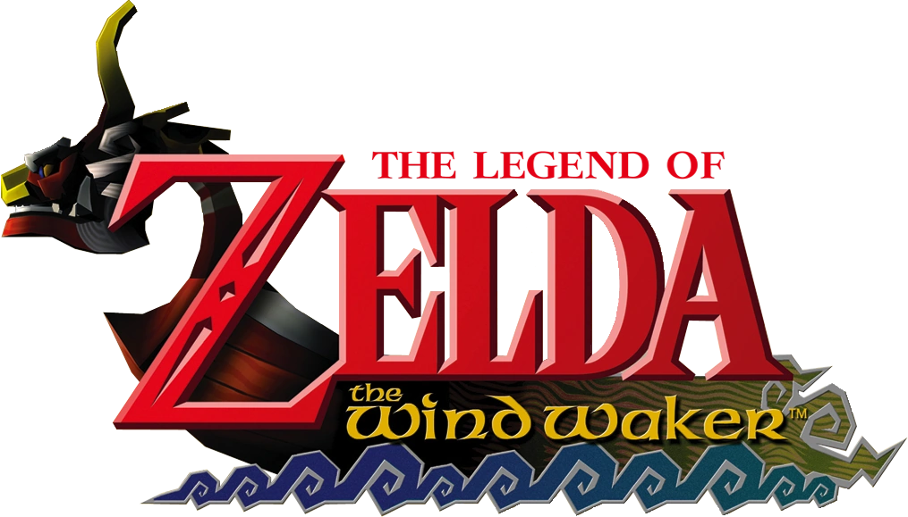
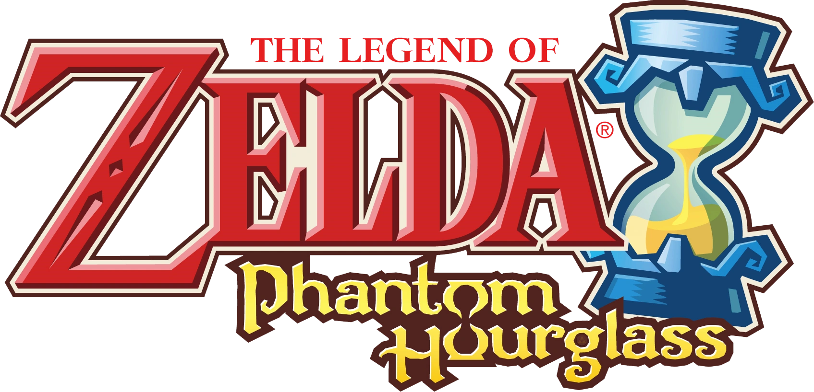
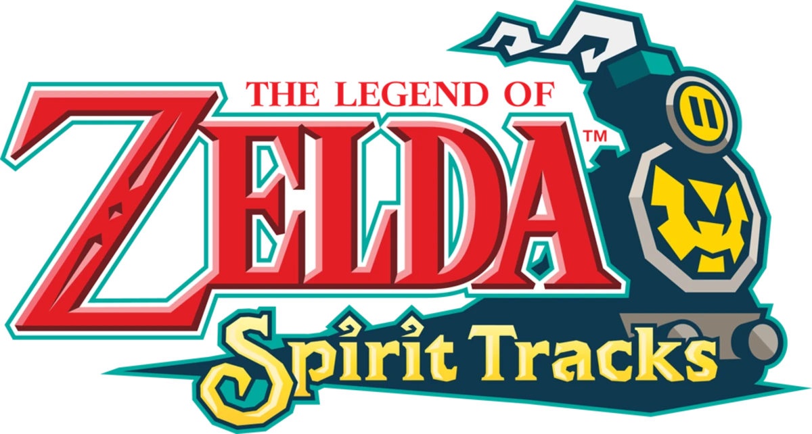

Adult Timeline
With Link gone, Ganondorf resurfaces. The gods flood Hyrule to stop him, beginning a new age.
The Wind Waker
Set on the Great Sea, Link sails to defeat Ganondorf beneath the waves.
Phantom Hourglass
Link continues his adventure with Tetra across the seas.
Spirit Tracks
A new kingdom rises, with Link facing the demon Malladus.